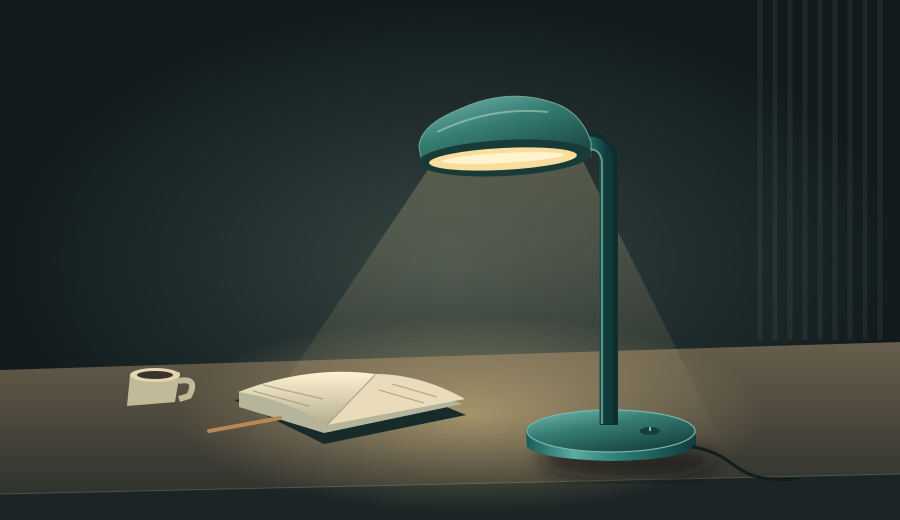

01 / 작업
어디까지 해도 될까?
- 입력
- 작은 책상용 램프 소개 이미지 + 짧은 영상 기획 요청
- 처리
- 목표를 나누고, 승인된 제작과 대기할 실행을 구분한다.
- 출력
- 허용: 교육용 제품 컷·3샷 기획. 대기: 실제 미디어 생성·운영 실행.
선택 B · title-space · 문구 공간 있음
01 / THE OUTCOME
“작은 책상용 램프를 소개하는 이미지와 짧은 영상 기획을 만들어 줘.”
예쁜 한 장만으로는
일관된 결과가 되지 않는다.

02 / INSIDE THE DECISIONS
같은 요청을 넘겨도,
각 단계가 맡는 질문은 다릅니다.
판단 경로
01 / 작업
선택 B · title-space · 문구 공간 있음
작업은 범위를, 지식은 근거를, 카탈로그는 자산을.
이미지는 구도를, 영상은 연속성을 맡습니다.
03 / MAKE IT FAIL. UNDERSTAND WHY.
취향을 채점하지 않습니다.
“문구 공간 필수”를 검사합니다.
교육용 구성 비교 · 실제 생성물 아님
초기화: B · 1개 · 모든 ID 복원
{
"selected_count": 1,
"template_id": "desk-launch",
"variant_id": "title-space",
"release_id": "lesson-r1",
"required_text_space": true,
"variant": { "text_space": true }
}기본 B는 선언된 조건에 맞습니다. JavaScript가 활성화되면 위 JSON을 실제 검사합니다.
PASS는 이 fixture의 조건 검사만 의미합니다.
미디어 생성·운영 카탈로그의 성공 증거가 아닙니다.
B: 문구 공간 true, 선택 수 1, ID 세 개가 있으므로 정상 조건. A: 문구 공간 false → TEXT_SPACE. 선택 수 2 → COUNT. release_id 없음 → RELEASE_ID. 정적 설명이며 실행 결과가 아닙니다.
JavaScript 없이도 세 화면을 순서대로 읽을 수 있습니다. 전체 설명: 정적 읽기.